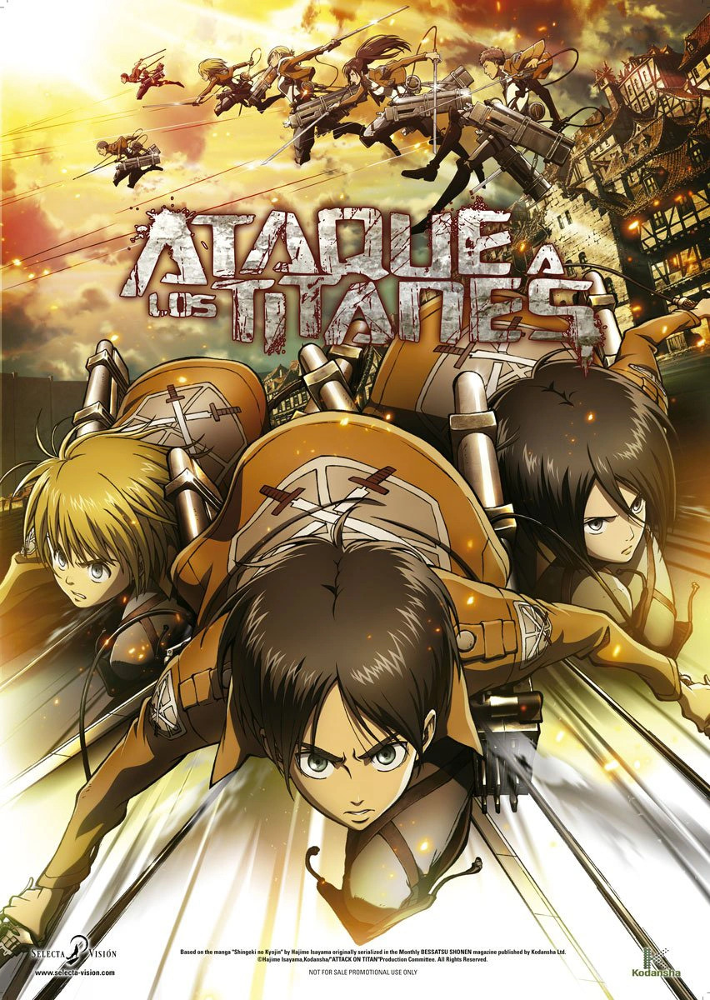
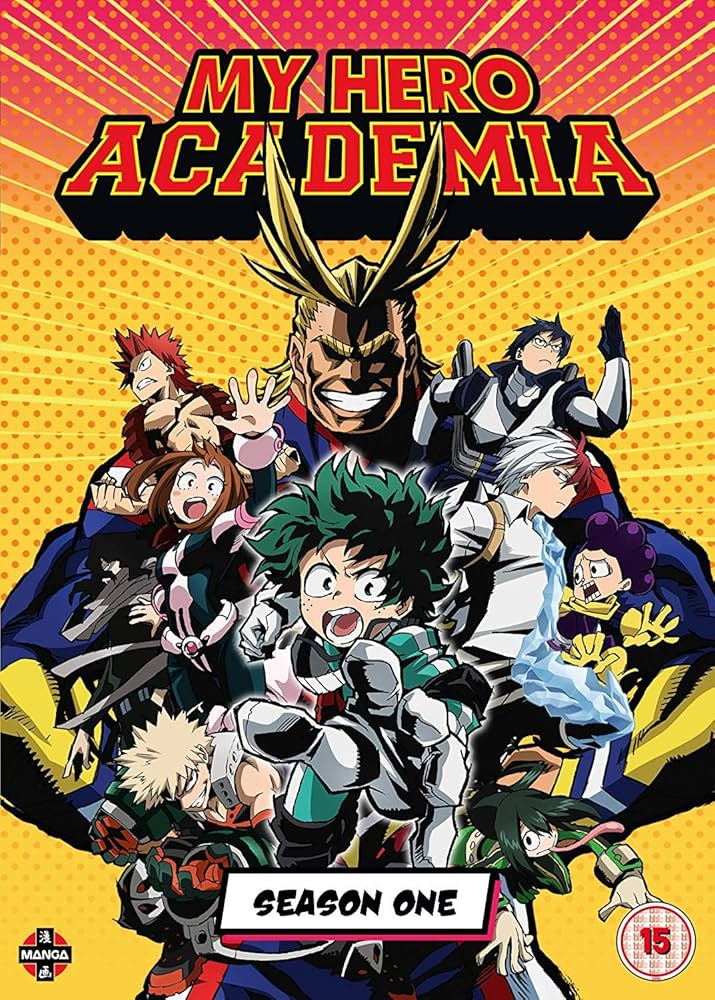
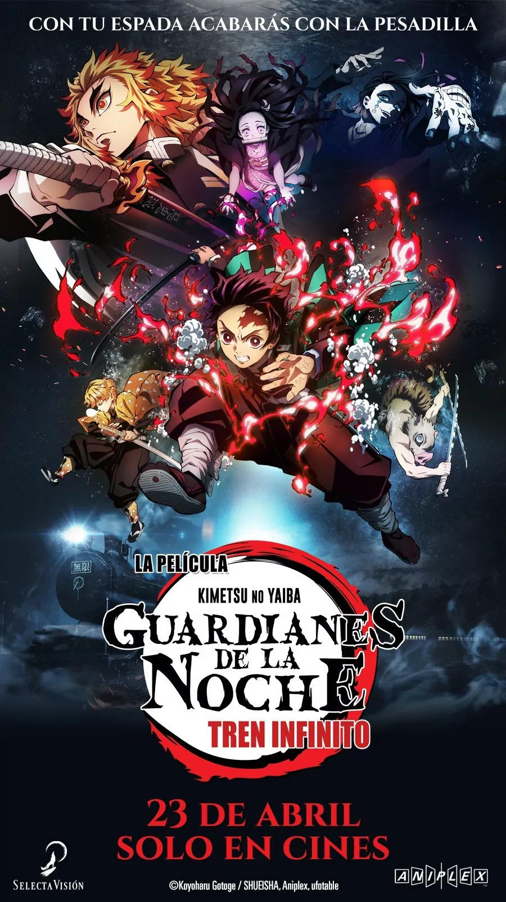
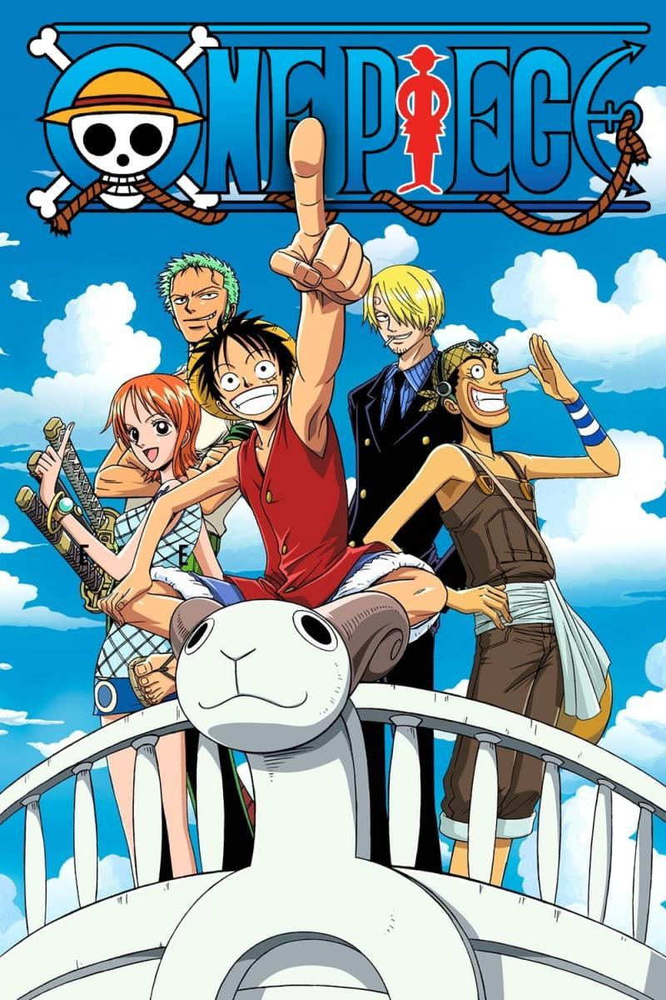

Últimos animes licenciados
Ataque a los titanes
Hace más de 100 años, los Titanes, gigantescos seres carentes de inteligencia con un apetito insaciable de seres humanos, aparecieron de la nada y llevaron a la humanidad al borde de la extinción. Convertidos en alimento para los Titanes, los supervivientes construyeron muros gigantescos de 50 metros de alto tras los que se refugiaron renunciando así al mundo más allá de los muros. Eren Jaeger es un joven que sueña con el mundo exterior y que está harto del conformismo con el que la humanidad vive encerrada como si se tratara de ganado. Pero la repentina llegada del Titán Colosal, más alto incluso que el muro, aplastará la ilusión de paz en la que vivía la sociedad humana y hará que Eren jure venganza contra los Titanes en nombre de la humanidad.
My Hero Academia
En un mundo en el que los súper poderes son la norma, Izuku, un joven sin ningún don sueña con ingresar en la escuela YUEI y convertirse en el mayor héroe de todos. ¡Pero la verdadera prueba para Izuku y sus amigos llega cuando un entrenamiento rutinario se convierte en una auténtica batalla a vida o muerte contra la alianza de villanos!
Jujutsu Kaisen

Aquí comienza la heroica leyenda de Yuji Itadori, un joven estudiante que se convierte en Maldición para exorcizar una Maldición. Sufrimiento, arrepentimiento, vergüenza… Las emociones negativas de los seres humanos se convierten en Maldiciones que nos acechan en nuestra vida cotidiana y pueden llevar incluso a la muerte. Y lo que es peor, estas Maldiciones solo se pueden exorcizar con otras Maldiciones. Yuji Itadori es un joven estudiante normal y corriente que, para salvar a unos compañeros de instituto que son atacados por una Maldición, se come un objeto maldito de categoría especial, el dedo de Ryomen Sukuna, y su propia alma absorbe la Maldición. Con la guía de Satoru Gojo, el hechicero más fuerte, Itadori, que ahora comparte su cuerpo con Ryomen Sukuna, el Rey de las Maldiciones, es transferido a la Escuela Jujutsu, una institución especializada en combatir Maldiciones...
Guardianes de las noche: Tren infinito
Tras completar el entrenamiento en la Mansión de la Mariposa, Tanjiro y sus compañeros se dirigen a su siguiente misión en el Tren del Infinito, donde más de 40 personas han desaparecido en un periodo muy corto de tiempo. Tanjiro y Nezuko, acompañados por Zenitsu e Inosuke, se unen a uno de los espadachines más poderosos entre los miembros del Cuerpo de Matademonios, el actual Pilar de las Llamas Kyojuro Rengoku, con el propósito de hacer frente al demonio a bordo del Tren del Infinito. Lo que desconocen es que se están adentrando en una mortífera trampa tendida por Enmu, Demonio del Sueño y una de las 12 Lunas Demoníacas, en un tren con rumbo a la desesperación…
Spy X Family

En una época en la que países de todo el mundo libran una feroz guerra de información entre bastidores, las naciones de Ostania, al este, y Westalis, al oeste, se encuentran enzarzadas en una guerra fría que dura más de una década. El espía de élite conocido como “Twilight”, perteneciente al Servicio de Inteligencia de Westalis para Contrarestar el Este (también llamado “WISE”), recibe una misión secreta para investigar las actividades de Donovan Desmond, el líder del Partido de la Unidad Nacional del Este, quien representa una amenaza para la paz entre este y oeste. El nombre de la misión es “Operación Strix". Las instrucciones para cumplirla son: “Forma una familia en una semana e infiltra a tu descendiente en la reunión social de la prestigiosa escuela a la que asiste el hijo de Desmond”. Entonces, Twilight adopta la identidad de Loid Forger, un psiquiatra, y se dispone a formar una familia. Pero, sin saberlo, termina adoptando a una niña telépata, Anya, y la mujer con quien arregla un matrimonio falso, Yor, es una asesina a sueldo. Los tres empiezan a vivir juntos como familia por intereses personales, mientras se ocultan mutuamente sus identidades reales. La paz mundial queda en manos de esta familia temporal que deberá afrontar un sinfín de situaciones inesperadas.
One Piece
One Piece es un popular manga y anime japonés creado por Eiichiro Oda. Su publicación comenzó en 1997, y ha alcanzado una enorme fama mundial gracias a su épica narrativa, sus personajes memorables y su mundo rico en detalles.El universo de One Piece está compuesto por vastos océanos, islas únicas y regiones peligrosas. Los mares están divididos en varios sectores principales, como el East Blue, el Grand Line y el Nuevo Mundo, donde se encuentran los desafíos más difíciles.